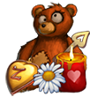
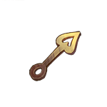
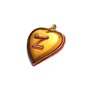
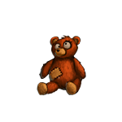

Получено: файл; исходный URL. Иллюстрация в отдельной статье ViveR_9 «Любовная коллекция»; исходный файл без перекодирования. Авторство отдельно не установлено. Страница: источник.

Любовная коллекция
Браузерная социальная версия; историческая статья; дата редакции неизвестна- Тип
- Коллекции
- Версия и дата
- Браузерная социальная версия; историческая статья; дата редакции неизвестна
Элементы коллекции









Данные по источнику · Браузерная социальная версия · историческая статья; дата редакции неизвестна
Предварительно: один материал, требуется сверка. Требуется сверка.
- Состав (источник Zombie-island)
- Стрелка; Свеча; Ромашка; Медальон; Тедди.
- Награда (источник Zombie-island)
- 50 Супер-лопаты; 1000 Опыт.
- Где копать Любовную коллекцию в Зомби Ферме лопатами
- Элитный букет; Марафонец; Флаг Марафонца.
- Любовную коллекцию можно нарыть Палочками в Подземелье
- Палочка-выручалочка; Кристаллы; Щупальца; Черный мрамор; Белый мрамор; Зеленый мрамор.
- Любовная коллекция попадается в ведрах Рыбаков и в мешках Звездочетов
- Рыбак; Рыбак с мозгами; Звездочет; Звездочет за зомбаксы.
- Любовную коллекцию можно найти в сокровищах и ценностях
- Соседский подарок; Сундук Лимона; Гламурный Подарок; Дружеский подарок; Шапка фаната; Подарок фиолетовый с черепом; Дерево страсти; Веселая карусель; Биг-бен; Полосатое; Сюрприз бригады; Коллекционер 2; Посылки от Админа; Мандариновый сюрприз; Сундук Чудовища 3; Валентинка; Гламурный подарок; Подарок Зомби; Осенний сюрприз 4.
- Любовную можно выкрутить в рулетке
- Лимонный автомат.
- Любовная попадается при колдовании Палочками
- Палочка-выручалочка.
- Любовную коллекцию можно привезти с пиратских островов
- Пиратский сундук.
Данные по источнику · ВКонтакте, ZombieS Forever · дата редакции не установлена
Предварительно: Историческая фанатская страница; независимость от других источников не установлена. Возможны различия версий и дат.. Требуется сверка.
- Награда по ZombieS Forever
- 1 000 опыта и 50 лопат
- Места получения: выборка из источника
- В подземелье.
Данные по источнику · браузерная версия; платформа не указана · дата редакции не установлена
Предварительно: Содержимое списка: изображения и колонки могут терять смысл при извлечении текста; отдельная страница и дата не проверены. Подписи alt иногда ошибочны.. Требуется сверка.
- Текст карточки из каталога
- 1000 опыта и 50 Золотых лопат Стрелка Свеча Ромашка Медальон Тедди Где копать (Палочками-выручалочками): В подземельях, кликая Палочкой-выручалочкой на подземные ресурсы. Например, на подземных кристаллах на 25. Флаг Марафонца, Марафонец
Данные по источнику · браузерная версия; на сайте указана игра ВКонтакте · дата редакции не установлена
Предварительно: Исторический текст; сильно совпадает со справкой Zommbie.at.ua, независимость не доказана. Отрицания и доступность могут измениться с патчем.. Требуется сверка.
- Где искать по странице «Зомбастики»
- Щупальца (15 и 20 единиц) в Нижнем Днище, хрусталь (5 и 25 единиц) в Бездне.
Данные по источнику · историческая социальная версия ВКонтакте; редакция неизвестна · дата последующей редакции неизвестна
Предварительно: Фанатская статья; актуальность, вероятности и независимость от других справочников не установлены.. Требуется сверка.
- Состав
- Стрелка, Свеча, Ромашка, Медальон, Тедди.
- Обмен
- 1 000 опыта и 50 золотых лопат: на связанной иконке подписано «Супер-лопата».
- Получение
- Рулетка Лимонного автомата; среди ценностей Подарок Любви, Гламурный подарок, Ящик из-под лимона, Сундук Чудовища, Валентинка, Трюфель и другие; Рыбаки и варианты Звездочёта.
- Палочки
- Октавий, Пианистка, Пончик-перевёртыш, Почта Любви, разные подземные ресурсы и варианты чёрного, зелёного и белого мрамора.
- Лопаты у друзей
- Флаг Марафонца, Мастер урожая, Марафонец, Весеннее настроение и Весенняя ваза.
- Применение
- Космическая хижина, Крылья любви, Дерево Мира, создание «Ромашкового» и задания; количество не приведено.
Данные по источнику · историческая браузерная версия, платформа не указана · 10.01.2014 — дата в каталоге; дата редакции материала неизвестна
Предварительно: Фанатский список без вероятностей и уточнения площадки; независимость от других источников не установлена.. Требуется сверка.
- Где искать по списку сайта
- Щупальца (15 и 20 единиц) в Нижнем Днище, хрусталь (5 и 25 единиц) в Бездне
- Оговорка
- Список может относиться к разным условиям, инструментам и периодам игры; не доказывает гарантированное выпадение. Заявления «только» и «невозможно» относятся лишь к времени и версии источника.
Данные по источнику · историческая браузерная игра; площадка не уточнена · 26.02.2013 — дата каталога; редакция неизвестна
Предварительно: Проверен текст в каталоге сайта; вероятность выпадения не указана. Исторические версии и даты могут различаться; списки и награды требуют сверки, независимость сайта от других справочников не установлена.. Требуется сверка.
- Награда в источнике
- 1000 опыта и 50 золотых лопат
- Места в источнике
- Подземелья, флаг Марафонца, Марафонец. Даты адреса и каталога различаются.
Связанные сущности
нет проверенных связей — требуется сверка.
Источники
- прочитано: Zombie-island.moy.su; проверка 2026-11-21
- Прочитана статья или строка таблицы; требуется сверка
- ZOMBIA: прочитана карточка в списке
- Ссылка на отдельную страницу; отдельно не проверена
- Зомбастики: прочитана соответствующая строка; возможная копия другого справочника
- ViveR_9: прочитанная статья коллекции
- zommbie.at.ua: где искать коллекции
- zombi-ferma.ucoz.net: каталог коллекций